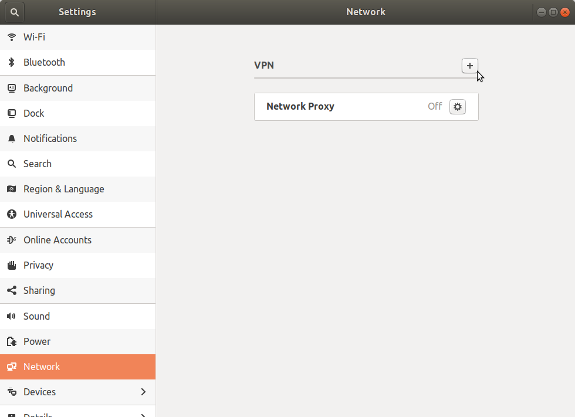
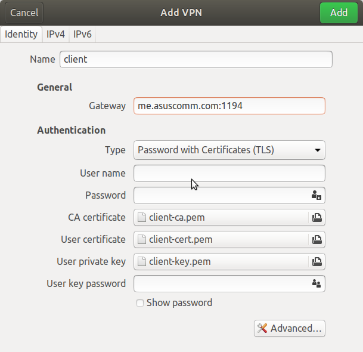
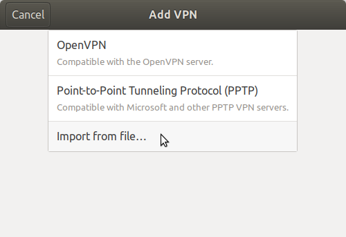
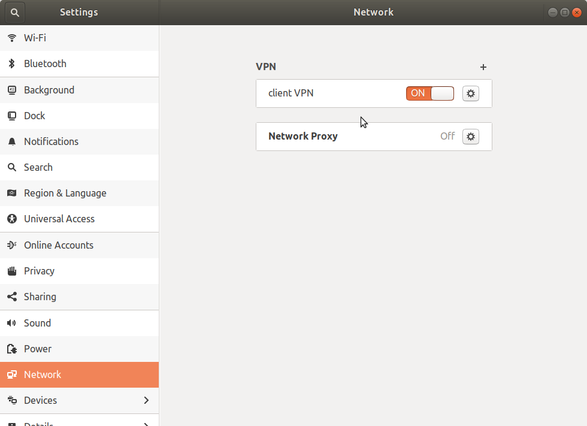

Vue Test
Go away, it's too early!
Go away, it's time for my nap!
Go away, it's too late!
What the hell
Go away, it's too early!
Go away, it's time for my nap!
Go away, it's too late!
What the hell
[/]
[ ] Did you specify the type of data analytic question (e.g. exploration, association causality) before touching the data?radvd (the router advertisement daemon) sends IPv6 advertisements and responds to node IPv6 requests. Here's the description from the man page.
radvd is the router advertisement daemon for IPv6. It listens to router solicitations and sends router advertisements as described in "Neighbor Discovery for IP Version 6 (IPv6)" (RFC 4861). With these advertisements hosts can automatically configure their addresses and some other parameters. They also can choose a default router based on these advertisements.
Setting radvd is suspiciously easy compared to other linux services. First you install it.
sudo apt install radvd
Installing it will also start the service so we can use systemctl to check how it's doing.
systemctl status radvd
systemctl status radvd
● radvd.service - LSB: Router Advertising Daemon
Loaded: loaded (/etc/init.d/radvd; bad; vendor preset: enabled)
Active: active (exited) since Fri 2018-07-20 12:39:19 PDT; 36s ago
Docs: man:systemd-sysv-generator(8)
Jul 20 12:39:18 asgaard systemd[1]: Starting LSB: Router Advertising Daemon...
Jul 20 12:39:19 asgaard radvd[8532]: Starting radvd:
Jul 20 12:39:19 asgaard radvd[8532]: * /etc/radvd.conf does not exist or is empty.
Jul 20 12:39:19 asgaard radvd[8532]: * See /usr/share/doc/radvd/README.Debian
Jul 20 12:39:19 asgaard radvd[8532]: * radvd will *not* be started.
Jul 20 12:39:19 asgaard systemd[1]: Started LSB: Router Advertising Daemon.
You can see in the output that there's a line with /etc/radvd.conf does not exist or is empty.. To fix this we're going to create the configuration file.
Now create a configuration file (named radvd.conf). Here's an example.
interface eth0
{
MinRtrAdvInterval 3;
MaxRtrAdvInterval 4;
AdvSendAdvert on;
AdvManagedFlag on;
prefix 2001:db7::/64
{ AdvValidLifetime 14300; AdvPreferredLifetime 14200; }
;
};
Note that the interface name depends on your system. Most linux systems don't use the eth0 convention anymore. On my desktop the ethernet inteface is called enp1s0 and on my raspberry pi it's enxb827eb6c9129 so make sure you check what your interface name is using ifconfig.
Now move (or copy) the config file into /etc/
sudo mv radvd.conf /etc/
And then restart radvd and check its state.
sudo service radvd restart systemctl status radvd
● radvd.service - LSB: Router Advertising Daemon
Loaded: loaded (/etc/init.d/radvd; bad; vendor preset: enabled)
Active: active (exited) since Fri 2018-07-20 12:41:36 PDT; 2s ago
Docs: man:systemd-sysv-generator(8)
Process: 10008 ExecStop=/etc/init.d/radvd stop (code=exited, status=0/SUCCESS)
Process: 10017 ExecStart=/etc/init.d/radvd start (code=exited, status=0/SUCCESS)
Jul 20 12:41:36 asgaard systemd[1]: Starting LSB: Router Advertising Daemon...
Jul 20 12:41:36 asgaard radvd[10017]: Starting radvd:
Jul 20 12:41:36 asgaard radvd[10017]: * IPv6 forwarding seems to be disabled.
Jul 20 12:41:36 asgaard radvd[10017]: * See /usr/share/doc/radvd/README.Debian
Jul 20 12:41:36 asgaard radvd[10017]: * radvd will *not* be started.
Jul 20 12:41:36 asgaard systemd[1]: Started LSB: Router Advertising Daemon.
So the warning about the configuration file went away, now we have to fix the IPv6 forwarding seems to be disabled. error.
For now you can enable it at the command line.
sudo sysctl -w net.ipv6.conf.all.forwarding=1
And restart and check radvd again.
sudo service radvd restart systemctl status radvd
● radvd.service - LSB: Router Advertising Daemon
Loaded: loaded (/etc/init.d/radvd; bad; vendor preset: enabled)
Active: active (running) since Fri 2018-07-20 12:45:02 PDT; 20s ago
Docs: man:systemd-sysv-generator(8)
Process: 12255 ExecStop=/etc/init.d/radvd stop (code=exited, status=0/SUCCESS)
Process: 12264 ExecStart=/etc/init.d/radvd start (code=exited, status=0/SUCCESS)
CGroup: /system.slice/radvd.service
├─12275 /usr/sbin/radvd -u radvd -p /var/run/radvd/radvd.pid
└─12276 /usr/sbin/radvd -u radvd -p /var/run/radvd/radvd.pid
Jul 20 12:45:01 asgaard systemd[1]: Starting LSB: Router Advertising Daemon...
Jul 20 12:45:02 asgaard radvd[12274]: version 2.11 started
Jul 20 12:45:02 asgaard radvd[12264]: Starting radvd: radvd.
Jul 20 12:45:02 asgaard systemd[1]: Started LSB: Router Advertising Daemon.
So it looks like our daemon is working. If you restart the server, though, the IPv6 port forwarding won't be enabled so open up /etc/sysctl.conf and un-comment out the following line.
net.ipv6.conf.all.forwarding=1
Now the next time you power on the computer it should be enabled.
To check if it's working you can put another device on the LAN and check ifconfig. In our radvd.conf file we defined the prefix for the address:
prefix 2001:db7::/64
So in the ifconfig output we should see an entry for an IPv6 address that starts with 2001:db7::. In fact I ended up with two.
inet6 2001:db7::b8b4:6adf:6267:5571 prefixlen 64 scopeid 0x0<global> inet6 2001:db7::a80c:1a05:eaac:c1e8 prefixlen 64 scopeid 0x0<global>
I'm connecting to a remote network using OpenVPN served by an ASUS access point. I originally did it at the command line.
sudo openvpn --config client.ovpn
It turns out that this doesn't allow me to access anything outside of the network that I was connecting to. From what I can tell it's a DNS problem, but nothing I found about fixing DNS problems with OpenVPN from the command line worked. Luckily the Network Settings GUI works, but even then, it didn't work out of the box.
First, not everything you need is installed. Besides the openvpn client itself (which I had installed before trying to run it at the command line) you need some things for the network settings as well.
apt install openvpn network-manager-openvpn network-manager-openvpn-gnome
Now open the network settings.

In the window that pops up click on the + sign to add a connection.

In the window that then pops up click on Import from file... (I'm assuming you are using a config file).
Navigate to the config file, and double-click on it. In the dialog that pops up enter whatever extra information you need. In my case it was the username and password.

Click on the green 'Add' button and you should now have an entry for your VPN connection in the network settings. Click on the on switch (initially labeled 'Off') and if you're lucky it will connect.

Unfortunately for me it didn't connect. In /var/log/syslog I could see entries like this:
gnome-shell[2805]: Invalid VPN service type (cannot find authentication binary)
I don't know if the message is directly telling you this (it doesn't seem to), but it turns out that for some reason the Network Settings doesn't save your password. Look in /etc/NetworkManager/system-connections/ for a file that matches the name you gave your vpn in the settings. In my case it was just called 'client'. Open it as root in an editor.
sudo emacs /etc/NetworkManager/system-connections/client
Then change this line in the [vpn] section:
password-flags=1
to
password-flags=0
Then add this section.
[vpn-secrets] password="your-password"
Where "your-password" is your vpn password. The quotation marks around your password are required.
First restart the network manager.
sudo service network-manager restart
Now re-open the network settings and click on the switch again. With any luck this time it will stay on and you can check by going to one of the devices on your VPN network.

I'm using tcpdump to store packets and thought that it might be a good idea to put it on an external drive. It turned out to be a little more complicated than I thought it would be so here are my notes.
The first thing I wanted to do was format the drive. First I needed to get the name.
sudo lshw -C disk
Gave me this
*-disk
description: SCSI Disk
product: Elements 25A1
vendor: WD
physical id: 0.0.0
bus info: scsi@1:0.0.0
logical name: /dev/sda
version: 1014
serial: WX71D186F83C
size: 3725GiB (4TB)
capabilities: gpt-1.00 partitioned partitioned:gpt
configuration: ansiversion=6 guid=7ff8067e-6905-4746-a8ec-f3a1f90f99d0 logicalsectorsize=512 sectorsize=4096
So it's named /dev/sda. Now let's see if it's mounted.
lsblk -f
NAME FSTYPE LABEL UUID MOUNTPOINT sda └─sda1 ntfs Elements A4F2DF7DF2DF5262 mmcblk0 ├─mmcblk0p1 vfat PI_BOOT EAD0-90DA /boot └─mmcblk0p2 ext4 PI_ROOT 9d97a4df-a4eb-4b09-92b6-bb1ccfade0ee /
So you can see that there is a partition named sda1 and it's formatted using ntfs and it isn't mounted. Since I'm running it with linux I'll reformant the drive using ext4. I'm also going to give it the label westerndigital.
sudo mkfs -t ext4 -L westerndigital /dev/sda1
mke2fs 1.42.13 (17-May-2015) /dev/sda1 contains a ntfs file system labelled 'Elements' Proceed anyway? (y,n) y
Apparently Western Digital named the partition Elements. I entered y and continued.
Creating filesystem with 976745728 4k blocks and 244187136 inodes
Filesystem UUID: 00fb2543-edc3-4f84-874b-fc36c485f362
Superblock backups stored on blocks:
32768, 98304, 163840, 229376, 294912, 819200, 884736, 1605632, 2654208,
4096000, 7962624, 11239424, 20480000, 23887872, 71663616, 78675968,
102400000, 214990848, 512000000, 550731776, 644972544
So checking it again.
lsblk -f
NAME FSTYPE LABEL UUID MOUNTPOINT sda └─sda1 ext4 westerndigital cd10dc9f-7420-4b85-87ff-b8dfbf57f031 mmcblk0 ├─mmcblk0p1 vfat PI_BOOT EAD0-90DA /boot └─mmcblk0p2 ext4 PI_ROOT 9d97a4df-a4eb-4b09-92b6-bb1ccfade0ee /
Shows that it's now ext4 and it has the label westerndigital. According to this page the Hardware Abstraction Layer (HAL) will auto-mount drives that have labels, although I haven't tested this yet.
First make a directory for it.
sudo mkdir /media/westerndigital
Then mount it.
sudo mount /dev/sda1 /media/westerndigital/
Now we can check on it.
lsblk
NAME MAJ:MIN RM SIZE RO TYPE MOUNTPOINT sda 8:0 0 3.7T 0 disk └─sda1 8:1 0 3.7T 0 part /media/westerndigital mmcblk0 179:0 0 29.8G 0 disk ├─mmcblk0p1 179:1 0 63M 0 part /boot └─mmcblk0p2 179:2 0 29.8G 0 part /
So we can see that it's mounted at /media/westerndigital/.
First I needed to put the wireless interface into monitor mode.
iwconfig wlx00c0ca967afb mode monitor
Then I ran tcpdump.
sudo tcpdump -n -w /media/westerndigital//channel_6.pcap -C 1000 -W 10 --snapshot-length 0 --interface wlx00c0ca967afb -z gzip --relinquish-privileges erysichthon
Which gave me this.
tcpdump: /media/westerndigital//channel_6.pcap0: Permission denied
On my desktop the solution was in the comments of this StackOverflow post.
sudo apparmor_parser -R /etc/apparmor.d/usr.sbin.tcpdump
But on my raspberry pi this raised an error.
Cache read/write disabled: interface file missing. (Kernel needs AppArmor 2.4 compatibility patch.) Warning: unable to find a suitable fs in /proc/mounts, is it mounted? Use --subdomainfs to override.
The solution was in the same post. I just made the permissions wide open.
sudo chmod 777 /media/westerndigital
This is probably a security risk, but it works.
Success comes from knowing what you're best at and being aligned with your context. Even insanity can be helpful given the right context.
I recently started revisiting some vue.js code that I was working on at work and when I ran the unit-tests all of them failed with pretty much the same error.
actual.should.equal is not a function. (In 'actual.should.equal(expected)', 'actual.should.equal' is an instance of ProxyObject)
I'm using the chai BDD 'should' style of testing, so this should have worked (because it was working before). To debug it I ran it with FireFox and when I did, all the tests mysteriously started working. It turns out I was using PhantomJS, which has been abandoned, and somewhere along the line something in chai stopped working with it, so I decided to set up Firefox headless as my browser instead. This is how I did it.
I already had this installed for debugging, but I'll mention it anyway, for completeness.
npm install karma-firefox-launcher --save-dev
I'm running the tests using karma and I had hoped that I would just have to change the name of the browser in the configuration, but it turns out to need a little setup in the karma.conf.js file. First get rid of the PhantomJS reference. Delete this:
browsers: ['PhantomJS'],
and replace it with this.
browsers: ['FirefoxHeadless'],
The FirefoxHeadless browser isn't actually defined, so you have to add it (I put it right after the browsers declaration).
customLaunchers: {
'FirefoxHeadless': {
base: 'Firefox',
flags: [
'-headless',
],
}
},
This tells karma to run firefox and pass in the -headless flag, as shown in the Mozilla documentation about firefox's headless mode. I found out how to do it from a question on Stack Overflow.
PhantomJS breaks the Chai's BDD style of testing, but since both Firefox and Chrome have headless modes, using them instead makes it work without actually needing to have the GUI launch.
These are tutorials I found on github.
I was looking for a way to update python dependencies that I'd installed with pip when I stumbled upon pip-tools. I'm not particularly good about keeping everything in sync and up-to-date so I'm hoping that this will make it easier to do and thus more likely that I'll do it. It's been a little while since I first used it and I had to look it up, so these are my notes to my future self.
pip-tools installs a command named pip-compile which will use either the requirements you put in your setup.py file or a special file named requirements.in (if you call it this you don't have to pass in the filename, otherwise you have to tell it where to look). Unless there's only a few requirements I prefer to use a separate file, rather than setup.py, since it makes it clearer and more likely that I'll keep it up to date. The requirements.in file is a list of your dependencies but unlike the requirements.txt file, it doesn't have version numbers, the version numbers are added when you call the pip-compile command.
So where does the requirements.in file come from? You have to make it. But if you're editing things by hand, doesn't this kind of make it less likely you'll maintain it? Yes, which is where pipdeptree comes in. pipdeptree will list all the python dependencies you installed as well as everything those dependencies pulled in as their dependencies. It's usefull to take a look at how a dependency you didn't directly install got into your virtual environment. You can install it from pypi.
pip install pipdeptree
Here's its help output.
pipdeptree -h
usage: pipdeptree [-h] [-v] [-f] [-a] [-l] [-u] [-w [{silence,suppress,fail}]]
[-r] [-p PACKAGES] [-j] [--json-tree]
[--graph-output OUTPUT_FORMAT]
Dependency tree of the installed python packages
optional arguments:
-h, --help show this help message and exit
-v, --version show program's version number and exit
-f, --freeze Print names so as to write freeze files
-a, --all list all deps at top level
-l, --local-only If in a virtualenv that has global access do not show
globally installed packages
-u, --user-only Only show installations in the user site dir
-w [{silence,suppress,fail}], --warn [{silence,suppress,fail}]
Warning control. "suppress" will show warnings but
return 0 whether or not they are present. "silence"
will not show warnings at all and always return 0.
"fail" will show warnings and return 1 if any are
present. The default is "suppress".
-r, --reverse Shows the dependency tree in the reverse fashion ie.
the sub-dependencies are listed with the list of
packages that need them under them.
-p PACKAGES, --packages PACKAGES
Comma separated list of select packages to show in the
output. If set, --all will be ignored.
-j, --json Display dependency tree as json. This will yield "raw"
output that may be used by external tools. This option
overrides all other options.
--json-tree Display dependency tree as json which is nested the
same way as the plain text output printed by default.
This option overrides all other options (except
--json).
--graph-output OUTPUT_FORMAT
Print a dependency graph in the specified output
format. Available are all formats supported by
GraphViz, e.g.: dot, jpeg, pdf, png, svg
If you look at the options you can see that there's a --freeze option, that's what we'll be using. Let's look at some of what that looks like.
pipdeptree --freeze | head
So it looks like the output of pip freeze except it puts the packages you installed flush-left and then uses indentation to indicate what that package installed. In the example above, I installed Nikola, then Nikola installed doit, and doit installed cloudpickle and pyinotify. I kind of remember needing to install pyinotify myself, but maybe pydeptree caught that it was a dependency that doit is using. Anyway.
For our requirements.in file we only want the names, and although there might be a reason to keep the entire tree, I think it makes it easier to understand what I'm using if the file only holds the dependencies at the top-level (the ones that I'm using directly, rather than being a dependency of a dependency). So, we'll use a little grep. First, since I'm a python-programmer I'm going to give it the -P flag to use perl escape codes. Next, we want to only match the lines that have alpha-numeric characters as the first character in the line.
| grep | Description |
|---|---|
-P, --perl-regexp
|
Use perl regular expression syntax |
^ |
Match the beggining of a line |
\w |
Match alpha-numeric character and underscores |
+ |
Match one or more |
First, let's see how many total dependencies there are.
pipdeptree --freeze | wc -l
: 160
So there are 160 dependencies total. How many did I install?
pipdeptree --freeze | grep --perl-regexp "^\w+" | wc -l
Out of the 160 only 11 were directly installed by me.
So we're done, right? Not yet, we need to get rid of the == and version numbers. I hadn't known that grep had this feature, since I normally use python instead of grep, but grep has an --only-matching option that will discard the parts of the line that don't match.
grep |
Description |
|---|---|
-o, --only-matching
|
Only show the parts of the line that match |
pipdeptree --freeze | grep --only-matching --perl-regexp "^\w+"
If you look at the first entry you'll notice it says ghp, but the actual name of the package is ghp-import, but the hyphen isn't part of the alpha-numeric set, so we'll have to add it.
| grep | Description |
|---|---|
[] |
Match one or the entries in the brackets |
pipdeptree --freeze | grep -oP "^[\w\-]+"
This looks like what we want, but there's a couple of things that we should take care of that would happen if this were for an installed package.
pkg-resources, which isn't something you can install.-e git+git@github.com:russell-n/iperflexer.git@65f4d3ca72670591f584efa6fa9bfd64c18a925b#egg=iperflexer
So we should filter those out.
grep |
Description |
|---|---|
-v, --invert-match
|
Return lines that don't match |
pipdeptree --freeze | grep --only-matching --perl-regexp "^[\w\-]+" | grep --invert-match "\-e\|pkg"
ghp-import2 graphviz Nikola notebook pip-tools pipdeptree virtualfish watchdog webassets wheel ws4py
There are probaby other exceptions that have to be added for other installations, but this looks like enough for us. Now we can redirect this to a requirements.in file and we're ready for pip-tools.
pipdeptree --freeze | grep --only-matching --perl-regexp "^[\w\-]+" | grep --invert-match "\-e\|pkg" > requirements.in
pip-compile will read in the requirements.in file and add the version numbers and can create a requirements.txt file. It will automatically look for the requirements.in file or you can explicitly pass in the filename.
pip-compile | head
# # This file is autogenerated by pip-compile # To update, run: # # pip-compile --output-file requirements.txt requirements.in # argh==0.26.2 # via watchdog backcall==0.1.0 # via ipython bleach==2.1.3 # via nbconvert blinker==1.4 # via nikola
You'll notice it adds in the dependencies of the dependencies and shows what requries them.
If we stopped at this point we'd have:
pipdeptree (as well as a way to plot the dependencies as a graph)requirements.in) to make it easier to readrequirements.txt file using our requirements.in fileI think that's kind of nice already, especially if you end up with a lot of dependencies. Try working with sphinx and scikit-learn and you'll see things start to explode. But of course, there's always more.
You can run pip-compile with the --upgrade option to try and update dependencies whenever you want to make sure you have the latest of everything (you can do it per-package too, but nah).
pip-compile --upgrade | head
# # This file is autogenerated by pip-compile # To update, run: # # pip-compile --output-file requirements.txt requirements.in # argh==0.26.2 # via watchdog backcall==0.1.0 # via ipython bleach==2.1.3 # via nbconvert blinker==1.4 # via nikola
This will upgrade your installation but not update the requirements.txt file, so you can test it out and see if everything works before updating the requirements.txt. If things don't work out, you could reinstall from the requirements.txt file, but see the next section for another way.
pip-tools also installed a command called pip-sync which will keep you in sync with what is in the requirements file, so as long as requirements.txt is always a working version, you can sync up with it to avoid problems with changes in any of the dependencies. This is different from the --upgrade option in that it will only install the exact version in the requirements file.
pip-sync
Collecting backcall==0.1.0 Collecting bleach==2.1.3 Using cached https://files.pythonhosted.org/packages/30/b6/a8cffbb9ab4b62b557c22703163735210e9cd857d533740c64e1467d228e/bleach-2.1.3-py2.py3-none-any.whl Collecting certifi==2018.4.16 Using cached https://files.pythonhosted.org/packages/7c/e6/92ad559b7192d846975fc916b65f667c7b8c3a32bea7372340bfe9a15fa5/certifi-2018.4.16-py2.py3-none-any.whl Collecting cloudpickle==0.5.3 Using cached https://files.pythonhosted.org/packages/e7/bf/60ae7ec1e8c6742d2abbb6819c39a48ee796793bcdb7e1d5e41a3e379ddd/cloudpickle-0.5.3-py2.py3-none-any.whl Successfully installed backcall-0.1.0 bleach-2.1.3 certifi-2018.4.16 cloudpickle-0.5.3 decorator-4.3.0 doit-0.31.1 ipykernel-4.8.2 ipython-6.4.0 jedi-0.12.0 jupyter-client-5.2.3 logbook-1.4.0 lxml-4.2.1 natsort-5.3.2 nikola-7.8.15 notebook-5.5.0 parso-0.2.1 pexpect-4.6.0 pillow-5.1.0 python-dateutil-2.7.3 send2trash-1.5.0 tornado-5.0.2 virtualenv-16.0.0 virtualfish-1.0.6 wheel-0.31.1 ws4py-0.5.1
Since I upgraded the installation the requirements.txt file is now behind the latests versions so by syncing I undid the upgrade. This time I'll upgrade again and save the output.
pip-compile --upgrade
So now the file and my installation should be in sync.
pip-sync
: Everything up-to-date
So there you have it, how to keep dependencies synced. The README for pip-tools is much briefer, but I thought I'd add a little more detail to the part of it that I plan to use the most.
I'm trying to set-up a wireless packet monitor (it's something I've long thought might be an interesting source of data, and now I need it for work too). My thought was that I'd set up a raspberry pi to experiment with - I don't think it is powerful enough to work, but it should work just to mess with code, and a distributed system might get some interesting results, but anyway - but when I tried to put my raspberry pi's wireless interface into monitor mode I got an error.
iwconfig wlan0 mode monitor
Error for wireless request "Set Mode" (8B06) :
SET failed on device wlan0 ; Operation not supported.
Looking around on the web I found this reddit post as well as some Stack Overflow posts that said that monitor mode isn't supported on the Raspberry Pi. There is a project called nexmon that apparently lets up add a firmware patch to enable it, which I'll probably try later, but before I tried that I remembered that I have a Realtek 8812AU USB WiFi adapter that I bought a while ago for an old desktop I had that I wasn't using so I decided to try it.
The first thing I did was to see if it would just work. I plugged the Realtek into the USB port and although lsusb showed it, iwconfig didn't show it as an interface. Back to the internet.
Next I found a repository on github that has the driver for the Realtek set up for linux machines. I downloaded it and followed the instructions to build it - the main thing is to set:
CONFIG_PLATFORM_I386_PC = n CONFIG_PLATFORM_ARM_RPI = y
in the Makefile - but when I tried to build it I got this error.
sudo dkms install -m $DRV_NAME -v $DRV_VERSION 'make' KVER=4.4.38-v7+....(bad exit status: 2) ERROR (dkms apport): binary package for rtl8812AU: 4.3.20 not found Error! Bad return status for module build on kernel: 4.4.38-v7+ (armv7l) Consult /var/lib/dkms/rtl8812AU/4.3.20/build/make.log for more information.
There was also a message in the make.log file but I didn't remember to copy it.
The solution was in this StackOverflow post - the make program is being pointed to a folder named arm7l (thats 'arm seven ell') but it should actually be pointed to one named arm. The simple solution is to create an alias with the correct name.
sudo ln -s /usr/src/linux-headers-4.4.38-v7+/arch/arm/ /usr/src/linux-headers-4.4.38-v7+/arch/armv7l
This turns out to fix the build problem and after a reboot the network interface showed up.
The Raspberry Pi 3 doesn't support monitor mode for its wireless interface out of the box, and while there is a firmware patch to enable it, I chose to use a Realtek RTL 8812AU USB WiFi adapter instead. You need a little bit of extra work to get it going, but it does seem to work. One thing I noticed is that iwconfig will put it in monitor mode but airmon-ng doesn't (I haven't figured out why yet). It doesn't report an error, it just doesn't seem to work. Also, iw always reports the interface as managed, even when it isn't… maybe I'll try the firmware patch after all.